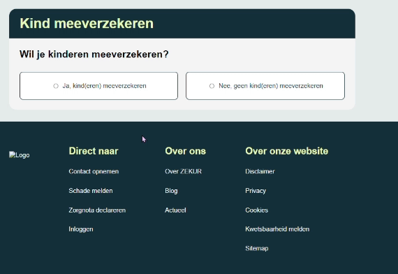
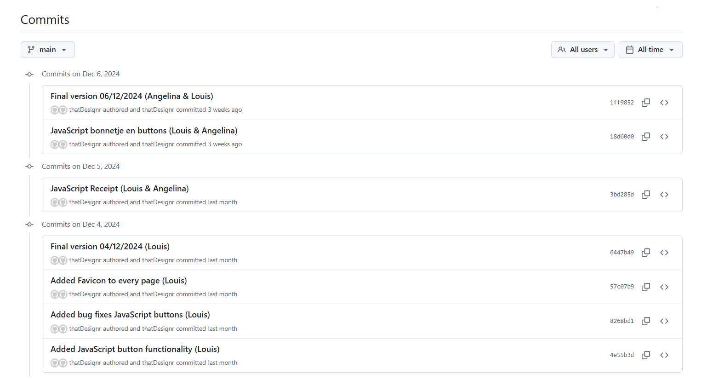

Media Development
Na het maken van de re-design van de website ZEKUR mochten we aan de slag gaan met het coderen van
deze website. We hebben samen in een groepje van drie hieraan gewerkt. De programmeertalen die we hiervoor gebruikt
zullen worden is HTML, CSS en JavaScript.

Wat did I do?
Ik heb gecheckt of alle knoppen interactief zijn en die gelinkt aan de pagina's, zoals de knoppen "terug" en "Bereken premie".
De delen die ik heb gemaakt zijn de eigen risico, ongevallenverzekering en kind meeverzekeren. In het
stukje kind meeverzekeren zit ook JavaScript. Je kunt klikken op ‘ja’ of ‘nee’. Wanneer je op ‘ja’ klikt, klapt het uit
en kun je selecteren hoeveel kinderen je kunt meeverzekeren. Je kunt maximal 5 kinderen toevoegen.

How did I do it?
Ik heb verschillende delen gemaakt op twee pagina’s met HTML, CSS en JavaScript. Ik heb dit kunnen doen met behulp van
mijn teamgenoten die al voorkennis hadden over verschillende onderwerpen en docenten.
Why did I do that?
Om een bruikbaar en goed eindproduct te maken met de resultaten van Fix-that-UX, hebben we samen aan dit project
gecodeerd. Dit proces heeft me geleerd hoe je met anderen effectief kunt samenwerken aan één project met behulp van Git,
en het heeft mijn programmeervaardigheden verder verbeterd.
Version Control
Voor dit project hebben is er een README file aangemaakt en hebben we regelmatig gecommit. Bij de commit zetten we een
message die verteld wat de aanpassing is en wie de aanpassing heeft gemaakt.

Presentatie
Vorige keer hadden we de presentatie bij Hike One in Amsterdam gehouden, maar dit keer hebben we de website via een
teamsmeeting laten zien aan Hike One.

Reflectie
Ik vond dat we het een goede samenwerking hadden en dat we ook gelijk aangaven wanneer iets niet goed liep, zodat we het
konden aanpassen. We hebben deze website snel kunnen maken. De Javascript voor de bon hebben we op het einde gedaan,
omdat dat meer tijd kostten om het te onderzoeken hoe het allemaal in z’n werk ging.
Voor de volgende keer zouden we vanaf hebben begin op een rijtje zetten welke groottes we gebruiken voor bepaalde
elementen op de pagina’s dan weet iedereen gelijk waar die zich aan moet houden, zodat er geen verschillende formaten
gebruikt worden tegelijkertijd.
{kind=link}
{kind=link}